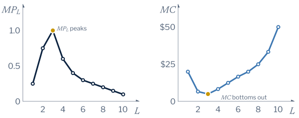
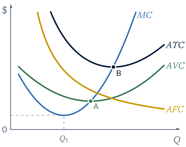
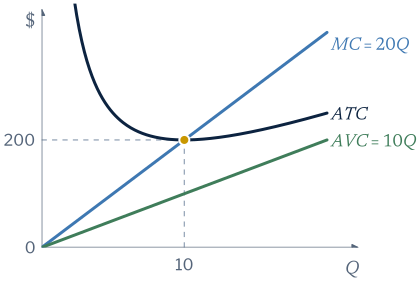
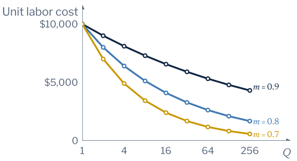
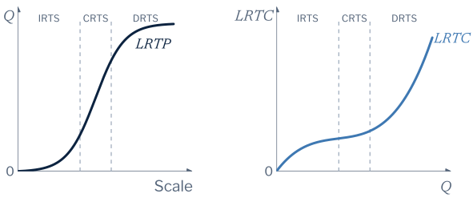
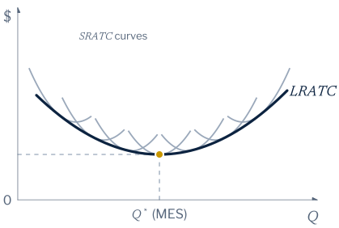
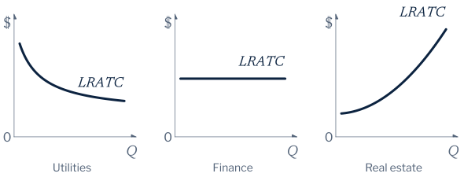
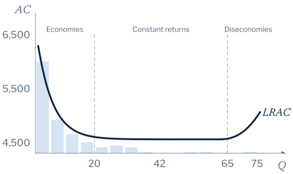

Lesson 7
FIN 30210 Managerial Economics
Jason R. Reed, PhD, University of Notre Dame
Total cost is a function of the production level \(Q\):
\[ TC = f(Q) \]
More generally, since output is itself a function of the inputs,
\[ TC = f\big(g(K_0, L)\big) \]
Costs are a function of our productive inputs.
Assume input prices are set in competitive markets. Then
\[ TC = P_K K_0 + P_L L \]
where \(P_K\) is the rental price of capital and \(P_L\) is the wage rate. Capital is the fixed input and labor is the variable input.
Total cost is now a combination of fixed and variable costs:
\[ TC(Q) = TFC + TVC(Q) \]
Total fixed costs (TFC) Come from acquiring and maintaining fixed factors of production. They’re incurred whatever the level of production: binding contracts, rent on office space, insurance, legal retainers.
Total variable costs (TVC) Come from acquiring and maintaining variable factors of production. In Stages I and II of production, we assume TVC increases as output increases.
Average fixed cost
\(AFC = \dfrac{TFC}{Q}\)
Average variable cost
\(AVC = \dfrac{TVC}{Q}\)
Average total cost
\(ATC = \dfrac{TC}{Q} = \dfrac{TFC + TVC}{Q}\)
Marginal cost
\(MC = \dfrac{dTC}{dQ} = \dfrac{dTVC}{dQ}\)
Sunk costs are paid whether or not any output is produced.
All sunk costs are fixed costs, but not all fixed costs are sunk.
Increasing and diminishing marginal product also drive the shape of the total cost function.
\[ MC = \frac{dTC}{dQ} = \left(\frac{dTC}{dQ}\right)\left(\frac{dL}{dL}\right) = \left(\frac{dTC}{dL}\right)\left(\frac{dL}{dQ}\right) \]
Let \(TC = P_L L + P_K K\). With capital fixed, \(dTC/dL = P_L\) and \(dL/dQ = 1/MP_L\), so
\[ MC = P_L\left(\frac{1}{MP_L}\right) \]

When \(MP_L\) begins to decline, \(MC\) begins to rise: diminishing marginal productivity has set in.
Marginal cost here is a wage of $5 divided by the marginal product of labor.

The cost curves take these shapes because the production function has increasing and then diminishing marginal product.
Problem 7.1 A firm’s total cost function is \(TC = 12 + 60Q - 15Q^2 + Q^3\). If the firm produces \(Q = 10\), calculate TFC, TVC, ATC, AFC, AVC, and MC.
\[ \begin{aligned} TFC &= 12 \\ TVC &= 60(10) - 15(10)^2 + (10)^3 = 100 \\ ATC &= \tfrac{12}{10} + 60 - 15(10) + (10)^2 = 11.2 \end{aligned} \]
\[ \begin{aligned} AFC &= \tfrac{12}{10} = 1.2 \\ AVC &= 60 - 15(10) + (10)^2 = 10 \\ MC &= 60 - 30(10) + 3(10)^2 = 60 \end{aligned} \]
As with productivity, there’s a link between the marginal and the average. We use the same strategy, but now we minimize.
\[ ATC = \frac{TC}{Q} \qquad \frac{dATC}{dQ} = \frac{Q\left(\frac{dTC}{dQ}\right) - TC}{Q^2} = \frac{1}{Q}\left(MC - ATC\right) = 0 \]
At the minimum of ATC, \(MC = ATC\).
Problem 7.2 A firm faces \(TC = 1000 + 10Q^2\).
\(ATC = 1000Q^{-1} + 10Q\)
\(\dfrac{dATC}{dQ} = -1000Q^{-2} + 10 = 0 \Rightarrow Q = 10\)
\(MC = 20Q = 200 = ATC\) at \(Q = 10\)
\(AVC = 10Q\) only rises, so it’s lowest at the first unit.

The learning curve effect is the relationship between rising per-worker productivity, and falling per-unit cost at fixed labor prices, as output and experience accumulate.
\[ \text{Cost of the } Q\text{th unit} = (\text{cost of the 1st unit}) \times (\text{amount produced})^{\text{rate of cost reduction}} \]
\[ \Gamma = \phi Q^{\beta}, \qquad \beta = \frac{\ln(m)}{\ln(\lambda)} \]
\(\phi\) is the per-unit cost of the first unit, \(Q\) is output, \(m\) is the learning factor, and \(\lambda\) is the factor of proportionality.
What happens to per-unit labor cost when \(m = 0\)?
| Output | \(m = 0.9\) | \(m = 0.8\) | \(m = 0.7\) |
|---|---|---|---|
| 1 | $10,000 | $10,000 | $10,000 |
| 2 | 9,000 | 8,000 | 7,000 |
| 4 | 8,100 | 6,400 | 4,900 |
| 8 | 7,290 | 5,120 | 3,430 |
| 16 | 6,561 | 4,096 | 2,401 |
| 32 | 5,904.90 | 3,276.80 | 1,680.70 |
| 64 | 5,314.41 | 2,621.44 | 1,176.49 |
| 128 | 4,782.97 | 2,097.15 | 823.54 |
| 256 | 4,304.67 | 1,677.72 | 576.48 |

Factor of proportionality fixed at 2. Learning effects usually come from skills built on repetitive tasks.
Problem 7.1 The labor cost of producing a single unit of output is $5,000.
Per-unit cost
\(\Gamma = (\$5{,}000)(120)^{\ln(0.74)/\ln(2.5)} = \$1{,}036.90\)
Labor hours
First unit: \(\$5{,}000 \div \$15 = 333.33\) hours. At 120 units: \(\$1{,}036.90 \div \$15 = 69.1\) hours per unit.

Increasing returns to scale Firms gain from specializing both human and non-human inputs: in-house lawyers, accountants, and economists; large-capacity equipment that’s more efficient than small machinery.
Decreasing returns to scale As firms grow, the efficiencies of size run out: more administrative layers, internal coordination problems, inflexible operations, transportation costs.
Scale refers to the size of the firm. Does the size of a firm’s operation affect its average costs of production?
Economies of scale Think increasing returns to scale: LRATC declines.
Constant returns to scale LRATC neither rises nor falls.
Diseconomies of scale Think decreasing returns to scale: LRATC rises.


There’s no a priori reason for a U-shape. Industry characteristics shape the curve.
| Industry | Top 50 firms’ share | Top 8 firms’ share |
|---|---|---|
| Utilities | 70% | 22% |
| Finance | 45% | 16% |
| Real estate | 25% | 8% |

Data on 114 electric utilities give this industry LRAC. Average cost per 1,000 kWh is on the vertical axis and output in billions of kWh is on the horizontal; the bars show how many firms operate at each size, most of them small.
Problem 7.2 A firm’s long-run total cost equation is estimated as \(LRTC = 2{,}000Q - 5Q^2 + 0.005Q^3\). What is its long-run average cost equation, and what is its minimum efficient scale?
\[ LRATC = \frac{LRTC}{Q} = 2{,}000 - 5Q + 0.005Q^2 \]
\[ \frac{dLRATC}{dQ} = -5 + 0.01Q = 0 \;\Rightarrow\; Q_{MES} = \frac{5}{0.01} = 500 \]
It’s restrictive to assume firms make only one product: Ford makes cars and trucks, Dow makes a variety of chemicals. A general two-good cost function is
\[ TC = TC(Q_1, Q_2) \]
Assume the firm uses the same production facilities to make both. There will clearly be cost relationships between the two goods:
Economies of scope Producing two or more goods in the same facilities costs less than producing them separately.
\[ TC(Q_1, 0) + TC(0, Q_2) > TC(Q_1, Q_2) \]
Cost complementarities The marginal cost of one good falls as production of the other rises: the cross-partial of total cost is negative.
\[ \frac{\partial MC_j(Q_j, Q_i)}{\partial Q_i} = \frac{\partial^2 TC}{\partial Q_j\,\partial Q_i} < 0 \]
Problem 7.3 A firm’s total cost function is estimated as \(TC = 100 - Q_1 Q_2 + Q_1^2 + Q_2^2\).
Scope
\((100 + Q_1^2) + (100 + Q_2^2) > 100 - Q_1 Q_2 + Q_1^2 + Q_2^2\) reduces to \(100 > -Q_1 Q_2\): true for all \(Q_1, Q_2 \ge 0\).
Complementarities
\(\partial TC / \partial Q_1 = 2Q_1 - Q_2\), so \(\partial^2 TC / \partial Q_1 \partial Q_2 = -1 < 0\) at every output level, including \(Q_1 = 2\), \(Q_2 = 4\).
Up next: Lesson 8
FIN 30210 Managerial Economics